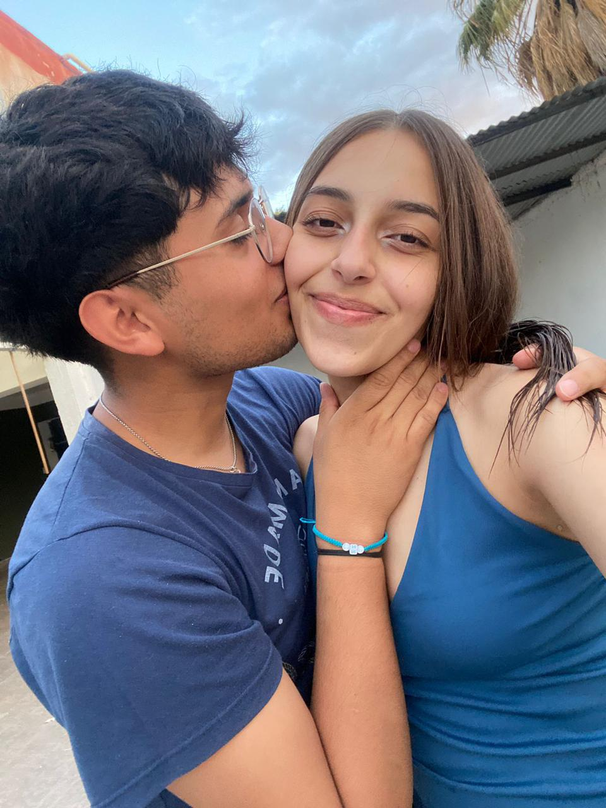

Hola mi amor este es el día 6, ya falta menos para poder verteee, estoy muy feliz. Gracias por darme la confianza siempre, y perdón por si algunos días no estuve bien, me costó un poco mucho pero gracias a vos pude estar bien. nunca me senti tan seguro de decir que vos vales mucho bian por que sos unica y sos diferente, gracias por no querer perder todo lo que construimos, por un momento tuve miedo, por que perderte sería lo peor para mi, te amo mucho nahir. Gracias por todo bebita y te espero con muchos besoootes. Ahi te dejo fotitooos nos hace falta maas. TE AMO.